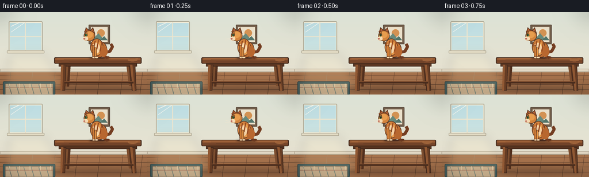
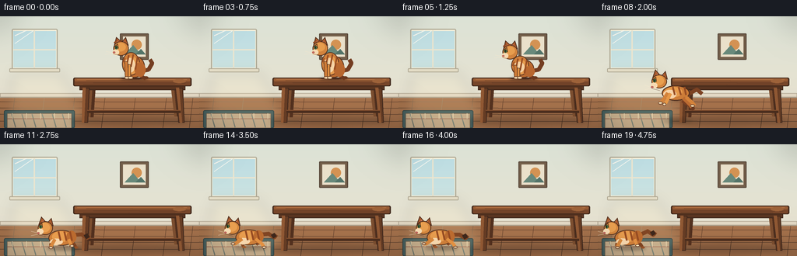
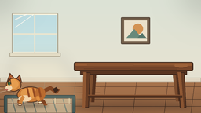

CODING AGENTS AS PIXEL WORLD MODELS
traex/DeepSeek-V4.1-Flash · dynamic_spatial_relationship_0011
点击播放 · 原生 RGB 像素
逐轮保存的候选
回放视频、检查图与代码变化。
每份候选均可单独播放。实际图片检查记录在下方工具轨迹中。
候选 01播放与检查图
点击播放 · 原生 RGB 像素


展开代码变化
--- 上一保存版本
+++ 本次保存版本
@@ -0,0 +1,429 @@
+from pathlib import Path
+import math
+
+import numpy as np
+from PIL import Image, ImageDraw, ImageFilter
+
+import artifact_io
+
+
+W, H = 256, 144
+FRAMES = 20
+FPS = 4
+SS = 4 # supersampling factor
+
+
+def sc(value):
+ return int(round(value * SS))
+
+
+def box(values):
+ return tuple(sc(v) for v in values)
+
+
+def pts(values):
+ return [(sc(x), sc(y)) for x, y in values]
+
+
+def ellipse(draw, bounds, fill, outline=None, width=0):
+ draw.ellipse(
+ box(bounds),
+ fill=fill,
+ outline=outline,
+ width=sc(width) if width else 0,
+ )
+
+
+def rectangle(draw, bounds, fill, outline=None, width=0, radius=0):
+ target = box(bounds)
+ if radius:
+ draw.rounded_rectangle(
+ target,
+ radius=sc(radius),
+ fill=fill,
+ outline=outline,
+ width=sc(width) if width else 0,
+ )
+ else:
+ draw.rectangle(
+ target,
+ fill=fill,
+ outline=outline,
+ width=sc(width) if width else 0,
+ )
+
+
+def polygon(draw, values, fill, outline=None, width=0):
+ draw.polygon(
+ pts(values),
+ fill=fill,
+ outline=outline,
+ width=sc(width) if width else 0,
+ )
+
+
+def line(draw, values, fill, width=1):
+ draw.line(
+ pts(values),
+ fill=fill,
+ width=max(1, sc(width)),
+ joint="curve",
+ )
+
+
+def arc(draw, bounds, start, end, fill, width=1):
+ draw.arc(
+ box(bounds),
+ start=start,
+ end=end,
+ fill=fill,
+ width=max(1, sc(width)),
+ )
+
+
+def vertical_gradient(top, bottom):
+ rows = np.linspace(np.asarray(top), np.asarray(bottom), H * SS)
+ array = np.repeat(rows[:, None, :], W * SS, axis=1).astype(np.uint8)
+ return Image.fromarray(array, "RGB").convert("RGBA")
+
+
+def soft_shadow(canvas, bounds, blur, opacity):
+ layer = Image.new("RGBA", canvas.size, (0, 0, 0, 0))
+ draw = ImageDraw.Draw(layer)
+ draw.ellipse(box(bounds), fill=(39, 28, 23, opacity))
+ layer = layer.filter(ImageFilter.GaussianBlur(blur * SS))
+ canvas.alpha_composite(layer)
+
+
+def draw_background(canvas):
+ wall = vertical_gradient((220, 226, 214), (236, 226, 207))
+ canvas.paste(wall, (0, 0))
+ draw = ImageDraw.Draw(canvas, "RGBA")
+
+ # Soft sunlit window on the left.
+ rectangle(draw, (15, 16, 74, 69), (248, 242, 220), outline=(178, 173, 153), width=1.5, radius=2)
+ glass = vertical_gradient((189, 221, 227), (233, 239, 220)).crop(
+ (0, 0, sc(55), sc(47))
+ )
+ canvas.paste(glass, (sc(17), sc(19)))
+ draw = ImageDraw.Draw(canvas, "RGBA")
+ line(draw, [(44, 18), (44, 67)], (235, 229, 207), 1.8)
+ line(draw, [(17, 43), (72, 43)], (235, 229, 207), 1.8)
+ line(draw, [(19, 25), (34, 18)], (255, 255, 247, 90), 1.2)
+ line(draw, [(19, 35), (42, 19)], (255, 255, 247, 60), 0.8)
+ rectangle(draw, (12, 67, 77, 72), (232, 225, 202), outline=(177, 170, 149), width=1, radius=1)
+
+ # A small framed print keeps the wall from feeling empty.
+ rectangle(draw, (154, 22, 191, 56), (115, 94, 74), outline=(89, 73, 59), width=1.3, radius=1)
+ rectangle(draw, (158, 26, 187, 52), (234, 224, 202))
+ ellipse(draw, (169, 30, 182, 43), (211, 146, 83))
+ polygon(draw, [(160, 49), (171, 37), (181, 49)], (104, 137, 123))
+ polygon(draw, [(174, 49), (181, 42), (187, 49)], (83, 116, 105))
+
+ # Floor with a subtle plank rhythm.
+ floor = vertical_gradient((169, 117, 78), (121, 77, 50)).crop(
+ (0, 0, W * SS, (H - 101) * SS)
+ )
+ canvas.paste(floor, (0, sc(101)))
+ draw = ImageDraw.Draw(canvas, "RGBA")
+ for y, alpha in [(110, 44), (118, 48), (126, 52), (135, 56)]:
+ line(draw, [(0, y), (256, y + 0.6)], (83, 55, 39, alpha), 0.7)
+ for x in (19, 57, 96, 135, 174, 214, 248):
+ line(draw, [(x, 102), (x - 5, 144)], (91, 60, 42, 34), 0.6)
+
+ rectangle(draw, (0, 99, 256, 105), (226, 216, 196), outline=(178, 167, 146), width=0.8)
+ line(draw, [(0, 104), (256, 104)], (169, 157, 137), 0.8)
+
+ # Muted woven rug where the cat lands.
+ rectangle(draw, (5, 121, 96, 144), (65, 91, 91), outline=(45, 65, 67), width=1, radius=2)
+ rectangle(draw, (9, 125, 92, 144), (194, 169, 136), outline=(126, 103, 80), width=0.7, radius=1)
+ for x in range(15, 91, 13):
+ line(draw, [(x, 126), (x + 5, 143)], (112, 126, 118, 85), 1.2)
+ line(draw, [(9, 132), (92, 132)], (151, 82, 67, 70), 0.8)
+ for x in (16, 34, 52, 70, 88):
+ line(draw, [(x, 125), (x, 132)], (242, 222, 186, 80), 0.7)
+
+ # Light spill from the window.
+ glow = Image.new("RGBA", canvas.size, (0, 0, 0, 0))
+ gdraw = ImageDraw.Draw(glow)
+ polygon(gdraw, [(18, 72), (77, 72), (121, 140), (4, 140)], (255, 236, 184, 28))
+ glow = glow.filter(ImageFilter.GaussianBlur(8 * SS))
+ canvas.alpha_composite(glow)
+
+
+def draw_table(canvas):
+ draw = ImageDraw.Draw(canvas, "RGBA")
+ soft_shadow(canvas, (91, 128, 245, 141), 3.5, 70)
+ draw = ImageDraw.Draw(canvas, "RGBA")
+
+ # Back legs sit behind the tabletop and floor shadows.
+ polygon(draw, [(115, 87), (123, 87), (120, 130), (113, 130)], (82, 48, 30))
+ polygon(draw, [(219, 87), (227, 87), (231, 129), (224, 129)], (82, 48, 30))
+ polygon(draw, [(115, 87), (119, 87), (116, 130), (113, 130)], (124, 78, 47))
+ polygon(draw, [(219, 87), (223, 87), (227, 129), (224, 129)], (124, 78, 47))
+
+ # Table apron and legs.
+ rectangle(draw, (102, 86, 238, 95), (88, 52, 32), outline=(62, 39, 28), width=1)
+ polygon(draw, [(106, 92), (115, 92), (113, 137), (105, 137)], (101, 60, 36), outline=(64, 40, 28), width=0.9)
+ polygon(draw, [(226, 92), (235, 92), (237, 137), (229, 137)], (101, 60, 36), outline=(64, 40, 28), width=0.9)
+ polygon(draw, [(106, 92), (110, 92), (108, 137), (105, 137)], (144, 88, 51))
+ polygon(draw, [(226, 92), (230, 92), (234, 137), (231, 137)], (144, 88, 51))
+ line(draw, [(112, 123), (232, 123)], (75, 45, 29), 3)
+ line(draw, [(112, 121), (232, 121)], (135, 82, 48), 1)
+
+ # Warm wooden tabletop with a readable front edge.
+ rectangle(draw, (94, 79, 246, 90), (101, 61, 39), outline=(61, 38, 25), width=1.2, radius=2)
+ rectangle(draw, (96, 80, 244, 84), (151, 91, 52), outline=None, radius=1)
+ rectangle(draw, (96, 84, 244, 89), (119, 70, 42), outline=None, radius=1)
+ line(draw, [(99, 81.5), (240, 81.5)], (181, 116, 68, 150), 0.8)
+ for y, offset in [(82.5, 8), (85.5, 17), (87.5, 4)]:
+ line(draw, [(103 + offset, y), (221 + offset, y + 0.4)], (72, 44, 29, 80), 0.45)
+ ellipse(draw, (222, 81, 239, 86), (157, 98, 57, 90))
+
+
+def cat_ear(draw, anchor, points, scale):
+ polygon(draw, points, (172, 92, 47), outline=(82, 48, 31), width=1)
+ inner = [
+ (
+ anchor[0] + (points[0][0] - anchor[0]) * 0.62,
+ anchor[1] + (points[0][1] - anchor[1]) * 0.62,
+ ),
+ (
+ anchor[0] + (points[1][0] - anchor[0]) * 0.62,
+ anchor[1] + (points[1][1] - anchor[1]) * 0.62,
+ ),
+ (
+ anchor[0] + (points[2][0] - anchor[0]) * 0.62,
+ anchor[1] + (points[2][1] - anchor[1]) * 0.62,
+ ),
+ ]
+ polygon(draw, inner, (220, 144, 126))
+
+
+def draw_sitting_cat(canvas, cx, ground_y, phase, crouch=0.0):
+ draw = ImageDraw.Draw(canvas, "RGBA")
+ s = 0.94
+ sway = math.sin(phase * math.tau) * 1.4
+
+ def p(x, y):
+ return (cx + x * s, ground_y + y * s)
+
+ def b(x0, y0, x1, y1):
+ return (*p(x0, y0), *p(x1, y1))
+
+ # Tail and far legs.
+ line(draw, [p(13, -10), p(22 + sway, -12), p(27 + sway, -21), p(24 + sway, -26)], (116, 61, 33), 5.2)
+ line(draw, [p(12, -8), p(13, -2), p(18, 0)], (111, 58, 32), 5)
+ ellipse(draw, b(15, -3, 22, 1), (105, 56, 31))
+
+ # Haunch, torso and lowered chest for the crouch.
+ body_drop = crouch * 5
+ ellipse(draw, b(-12, -31 + body_drop, 17, -1), (190, 109, 50), outline=(86, 50, 31), width=1.1)
+ ellipse(draw, b(-14, -36 + body_drop, 10, -4), (208, 128, 60), outline=(86, 50, 31), width=1.1)
+ ellipse(draw, b(-9, -30 + body_drop, 8, -6), (230, 155, 78, 125))
+ ellipse(draw, b(-11, -28 + body_drop, 4, -8), (246, 210, 164))
+ ellipse(draw, b(3, -22 + body_drop, 18, -2), (184, 103, 47))
+
+ # Tabby bands.
+ for x0, x1, y0, y1 in [(-5, -8, -32, -18), (1, -2, -33, -16), (7, 4, -30, -12)]:
+ line(draw, [p(x0, y0 + body_drop), p(x1, y1 + body_drop)], (151, 76, 34, 210), 2.1)
+ line(draw, [p(-10, -28 + body_drop), p(-13, -22 + body_drop)], (151, 76, 34, 180), 1.4)
+
+ # Front legs and paws.
+ polygon(draw, [p(-11, -24 + body_drop), p(-6, -23 + body_drop), p(-5, -1), p(-10, -1)], (205, 123, 55), outline=(91, 52, 31), width=0.8)
+ polygon(draw, [p(-6, -20 + body_drop), p(-2, -19 + body_drop), p(-2, -1), p(-6, -1)], (224, 145, 66), outline=(91, 52, 31), width=0.8)
+ ellipse(draw, b(-11, -3, -4, 1), (244, 211, 167), outline=(100, 61, 39), width=0.7)
+ ellipse(draw, b(-6, -3, 1, 1), (247, 217, 176), outline=(100, 61, 39), width=0.7)
+
+ # Head, ears and profile face.
+ head_y = -42 + body_drop
+ cat_ear(draw, p(-16, head_y), [p(-25, head_y - 4), p(-22, head_y - 15), p(-14, head_y - 8)], s)
+ cat_ear(draw, p(-16, head_y), [p(-15, head_y - 8), p(-9, head_y - 15), p(-5, head_y - 3)], s)
+ ellipse(draw, b(-26, head_y - 9, -5, head_y + 11), (210, 131, 61), outline=(84, 49, 31), width=1.1)
+ ellipse(draw, b(-24, head_y - 7, -9, head_y + 5), (231, 157, 78, 150))
+ ellipse(draw, b(-27, head_y + 2, -18, head_y + 10), (246, 218, 178))
+ polygon(draw, [(cx - 25 * s, ground_y + (head_y - 2) * s), (cx - 20 * s, ground_y + (head_y - 6) * s), (cx - 19 * s, ground_y + (head_y + 1) * s)], (204, 126, 57), outline=(84, 49, 31), width=0.8)
+ ellipse(draw, b(-24, head_y - 3, -20, head_y + 2), (80, 121, 70), outline=(53, 76, 48), width=0.45)
+ ellipse(draw, b(-23, head_y - 2, -21.5, head_y + 1), (29, 39, 27))
+ ellipse(draw, b(-26.5, head_y + 5, -23.5, head_y + 7.3), (201, 104, 95), outline=(133, 69, 62), width=0.35)
+ line(draw, [p(-26, head_y + 8), p(-15, head_y + 11)], (95, 59, 41), 0.55)
+ line(draw, [p(-27, head_y + 7), p(-36, head_y + 5)], (247, 230, 203, 180), 0.45)
+ line(draw, [p(-27, head_y + 8), p(-37, head_y + 9)], (247, 230, 203, 180), 0.45)
+ line(draw, [p(-25, head_y - 7), p(-21, head_y - 10)], (139, 69, 32), 1.5)
+ line(draw, [p(-18, head_y - 8), p(-14, head_y - 10)], (139, 69, 32), 1.3)
+
+
+def draw_air_cat(canvas, cx, cy, phase):
+ draw = ImageDraw.Draw(canvas, "RGBA")
+ s = 0.94
+ tail_wave = math.sin(phase * math.tau) * 3
+
+ def p(x, y):
+ return (cx + x * s, cy + y * s)
+
+ def b(x0, y0, x1, y1):
+ return (*p(x0, y0), *p(x1, y1))
+
+ # Long tail and trailing legs.
+ line(draw, [p(16, -5), p(28, -9 + tail_wave), p(35, -3 + tail_wave)], (124, 66, 35), 5)
+ line(draw, [p(8, 4), p(18, 11), p(22, 15)], (119, 62, 34), 4.5)
+ ellipse(draw, b(19, 12, 25, 17), (105, 56, 31))
+
+ # Stretched airborne torso.
+ ellipse(draw, b(-20, -17, 18, 4), (204, 124, 56), outline=(82, 48, 30), width=1.2)
+ ellipse(draw, b(-16, -15, 8, -1), (230, 154, 76, 140))
+ ellipse(draw, b(-18, -11, 0, 1), (246, 211, 168))
+ for x0, x1 in [(-5, -2), (3, 6), (11, 13)]:
+ line(draw, [p(x0, -15), p(x1, -4)], (151, 77, 35, 210), 2.2)
+
+ # Extended front and rear legs.
+ line(draw, [p(-12, -7), p(-19, 4), p(-23, 7)], (211, 130, 59), 4.3)
+ line(draw, [p(-8, -6), p(-14, 6), p(-17, 9)], (230, 151, 70), 4.2)
+ ellipse(draw, b(-25, 5, -19, 9), (247, 217, 177), outline=(96, 57, 37), width=0.65)
+ ellipse(draw, b(-19, 7, -14, 11), (247, 217, 177), outline=(96, 57, 37), width=0.65)
+ line(draw, [p(9, 0), p(18, 9), p(21, 13)], (188, 108, 49), 4.6)
+ line(draw, [p(13, -1), p(22, 7), p(25, 11)], (211, 130, 58), 4.4)
+ ellipse(draw, b(19, 9, 25, 13), (244, 211, 168), outline=(96, 57, 37), width=0.65)
+
+ # Head reaches forward.
+ cat_ear(draw, p(-23, -23), [p(-33, -27), p(-29, -39), p(-21, -30)], s)
+ cat_ear(draw, p(-23, -23), [p(-21, -30), p(-15, -37), p(-12, -25)], s)
+ ellipse(draw, b(-34, -32, -13, -13), (212, 133, 61), outline=(82, 48, 30), width=1.1)
+ ellipse(draw, b(-32, -30, -17, -17), (232, 159, 79, 145))
+ ellipse(draw, b(-35, -21, -26, -13), (247, 218, 177))
+ polygon(draw, [(cx - 33 * s, cy - 25 * s), (cx - 28 * s, cy - 29 * s), (cx - 27 * s, cy - 22 * s)], (202, 125, 56), outline=(82, 48, 30), width=0.8)
+ ellipse(draw, b(-32, -26, -28, -21), (82, 123, 71), outline=(51, 75, 47), width=0.45)
+ ellipse(draw, b(-31, -25, -29.5, -22), (29, 39, 27))
+ ellipse(draw, b(-35, -16, -31.5, -13.5), (201, 103, 94), outline=(133, 68, 61), width=0.35)
+ line(draw, [p(-34, -13), p(-23, -10)], (94, 58, 40), 0.55)
+ line(draw, [p(-35, -15), p(-43, -17)], (248, 232, 206, 180), 0.45)
+ line(draw, [p(-34, -13), p(-43, -11)], (248, 232, 206, 180), 0.45)
+
+
+def draw_running_cat(canvas, cx, ground_y, phase):
+ draw = ImageDraw.Draw(canvas, "RGBA")
+ s = 0.92
+ stride = math.sin(phase * math.tau)
+ lift_a = max(0, math.sin(phase * math.tau)) * 5
+ lift_b = max(0, -math.sin(phase * math.tau)) * 5
+ bob = -abs(math.sin(phase * math.tau)) * 1.4
+ tail_wave = math.sin(phase * math.tau + 0.9) * 3
+
+ def p(x, y):
+ return (cx + x * s, ground_y + (y + bob) * s)
+
+ def b(x0, y0, x1, y1):
+ return (*p(x0, y0), *p(x1, y1))
+
+ # Far pair of legs.
+ line(draw, [p(-10, -12), p(-15 + stride * 4, -5), p(-14 + stride * 6, -lift_b)], (136, 74, 36), 3.8)
+ line(draw, [p(9, -11), p(14 - stride * 4, -5), p(16 - stride * 5, -lift_a)], (126, 67, 33), 4)
+ ellipse(draw, b(-16 + stride * 6, -lift_b - 2, -11 + stride * 6, -lift_b + 1), (161, 91, 45))
+ ellipse(draw, b(14 - stride * 5, -lift_a - 2, 19 - stride * 5, -lift_a + 1), (148, 80, 39))
+
+ # Flowing tail.
+ line(draw, [p(15, -18), p(26, -20 + tail_wave), p(34, -15 + tail_wave), p(37, -19 + tail_wave)], (128, 69, 35), 5.3)
+ line(draw, [p(31, -16 + tail_wave), p(36, -19 + tail_wave)], (61, 39, 27), 5.8)
+
+ # Horizontal running body.
+ ellipse(draw, b(-20, -25, 17, -3), (206, 126, 57), outline=(83, 49, 30), width=1.1)
+ ellipse(draw, b(-15, -23, 9, -8), (232, 157, 78, 135))
+ ellipse(draw, b(-18, -13, 0, -4), (247, 215, 173))
+ ellipse(draw, b(5, -24, 19, -6), (187, 107, 47))
+ for x0, x1 in [(-6, -3), (2, 5), (10, 13)]:
+ line(draw, [p(x0, -23), p(x1, -10)], (150, 75, 34, 215), 2.2)
+
+ # Near pair of legs, alternating lift and contact.
+ line(draw, [p(-11, -12), p(-17 - stride * 4, -5), p(-19 - stride * 5, -lift_a)], (215, 135, 61), 4.2)
+ line(draw, [p(8, -12), p(13 + stride * 4, -5), p(15 + stride * 5, -lift_b)], (226, 145, 66), 4.3)
+ ellipse(draw, b(-22 - stride * 5, -lift_a - 2, -16 - stride * 5, -lift_a + 1.5), (247, 216, 175), outline=(96, 57, 37), width=0.65)
+ ellipse(draw, b(12 + stride * 5, -lift_b - 2, 18 + stride * 5, -lift_b + 1.5), (247, 216, 175), outline=(96, 57, 37), width=0.65)
+
+ # Head, ears and face.
+ cat_ear(draw, p(-24, -28), [p(-34, -32), p(-30, -44), p(-22, -35)], s)
+ cat_ear(draw, p(-24, -28), [p(-22, -35), p(-16, -42), p(-13, -30)], s)
+ ellipse(draw, b(-35, -37, -14, -18), (214, 136, 62), outline=(82, 48, 30), width=1.1)
+ ellipse(draw, b(-33, -35, -18, -22), (234, 160, 80, 145))
+ ellipse(draw, b(-36, -27, -27, -19), (248, 220, 180))
+ polygon(draw, [(cx - 34 * s, ground_y + (-31 + bob) * s), (cx - 29 * s, ground_y + (-35 + bob) * s), (cx - 28 * s, ground_y + (-28 + bob) * s)], (202, 125, 56), outline=(82, 48, 30), width=0.8)
+ ellipse(draw, b(-33, -32, -29, -27), (82, 123, 71), outline=(51, 75, 47), width=0.45)
+ ellipse(draw, b(-32, -31, -30.5, -28), (29, 39, 27))
+ ellipse(draw, b(-36, -22, -32.5, -19.5), (201, 103, 94), outline=(133, 68, 61), width=0.35)
+ line(draw, [p(-35, -19), p(-24, -16)], (94, 58, 40), 0.55)
+ line(draw, [p(-36, -21), p(-44, -23)], (248, 232, 206, 180), 0.45)
+ line(draw, [p(-35, -19), p(-44, -17)], (248, 232, 206, 180), 0.45)
+
+
+def draw_dust(canvas, cx, y, amount):
+ if amount <= 0:
+ return
+ layer = Image.new("RGBA", canvas.size, (0, 0, 0, 0))
+ draw = ImageDraw.Draw(layer)
+ for i, (dx, dy, r) in enumerate([(-10, -3, 4), (4, -5, 3), (-18, -1, 2.5)]):
+ alpha = int(70 * amount)
+ ellipse(draw, (cx + dx - r, y + dy - r, cx + dx + r, y + dy + r), (223, 200, 164, alpha))
+ layer = layer.filter(ImageFilter.GaussianBlur(1.8 * SS))
+ canvas.alpha_composite(layer)
+
+
+def cat_state(index):
+ if index <= 3:
+ return "sit", 170.0, 80.0, index * 0.16, 0.0
+ if index == 4:
+ return "sit", 166.0, 80.0, 0.10, 0.35
+ if index == 5:
+ return "sit", 158.0, 80.0, 0.30, 1.0
+ if index == 6:
+ return "air", 139.0, 72.0, 0.15, 0.0
+ if index == 7:
+ return "air", 119.0, 88.0, 0.42, 0.0
+ if index == 8:
+ return "air", 101.0, 105.0, 0.66, 0.0
+ if index == 9:
+ return "run", 91.0, 134.0, 0.00, 0.0
+ return "run", max(40.0, 91.0 - (index - 9) * 5.2), 134.0, ((index - 9) * 0.46) % 1.0, 0.0
+
+
+def render_frame(index):
+ canvas = Image.new("RGBA", (W * SS, H * SS), (255, 255, 255, 255))
+ draw_background(canvas)
+ draw_table(canvas)
+
+ mode, cx, cy, phase, crouch = cat_state(index)
+ if mode == "sit":
+ soft_shadow(canvas, (cx - 16, 78.5, cx + 21, 82.5), 1.7, 85)
+ draw = ImageDraw.Draw(canvas, "RGBA")
+ ellipse(draw, (cx - 14, 79.0, cx + 18, 81.3), (74, 43, 29, 50))
+ draw_sitting_cat(canvas, cx, cy, phase, crouch)
+ elif mode == "air":
+ jump_t = min(1.0, max(0.0, (index - 5) / 4.0))
+ shadow_w = 13 + jump_t * 10
+ soft_shadow(canvas, (cx - shadow_w, 132.0, cx + shadow_w, 137.0), 2.5, int(62 - jump_t * 16))
+ draw_air_cat(canvas, cx, cy, phase)
+ else:
+ soft_shadow(canvas, (cx - 21, 132.0, cx + 22, 136.5), 1.8, 86)
+ draw_dust(canvas, cx + 5, 133, max(0.0, 1.0 - (index - 9) / 2.0) if index <= 10 else 0.0)
+ draw_running_cat(canvas, cx, cy, phase)
+
+ # Subtle vignette to settle the composition without obscuring the action.
+ vignette = Image.new("L", canvas.size, 0)
+ vdraw = ImageDraw.Draw(vignette)
+ vdraw.rectangle(box((0, 0, W, H)), fill=0)
+ vdraw.ellipse(box((-18, -24, W + 18, H + 20)), fill=255)
+ vignette = vignette.filter(ImageFilter.GaussianBlur(15 * SS))
+ dark = Image.new("RGBA", canvas.size, (34, 31, 27, 38))
+ dark.putalpha(Image.eval(vignette, lambda v: 38 - int(v * 38 / 255)))
+ canvas.alpha_composite(dark)
+
+ return np.asarray(canvas.convert("RGB").resize((W, H), Image.Resampling.LANCZOS), dtype=np.uint8)
+
+
+def main():
+ case_dir = Path(__file__).resolve().parent
+ frames = np.stack([render_frame(i) for i in range(FRAMES)], axis=0)
+ artifact_io.save(frames, case_dir)
+ print(f"wrote {FRAMES} frames to {case_dir}")
+
+
+if __name__ == "__main__":
+ main()
候选 02播放与检查图
点击播放 · 原生 RGB 像素

展开代码变化
--- 上一保存版本
+++ 本次保存版本
@@ -84,7 +84,7 @@
def vertical_gradient(top, bottom):
rows = np.linspace(np.asarray(top), np.asarray(bottom), H * SS)
array = np.repeat(rows[:, None, :], W * SS, axis=1).astype(np.uint8)
- return Image.fromarray(array, "RGB").convert("RGBA")
+ return Image.fromarray(array).convert("RGBA")
def soft_shadow(canvas, bounds, blur, opacity):
可观测工具轨迹
实际执行的命令与返回图片。
命令 1exit 0
/bin/bash -c "pwd && rg --files -g 'prompt.txt' -g 'GENERATION_RULES.md' -g 'task_spec.json' -g '"'!**/.git/**'"'"
命令 2exit 0
/bin/bash -c 'ls -la'
命令 3exit 0
/bin/bash -c "find . -maxdepth 2 -type f -printf '%p\\n' | sort | head -200"
命令 4exit 0
/bin/bash -c 'cat prompt.txt'
命令 5exit 0
/bin/bash -c 'cat GENERATION_RULES.md'
命令 6exit 0
/bin/bash -c 'cat task_spec.json'
命令 7exit 0
/bin/bash -c "sed -n '1,240p' artifact_io.py"
命令 8exit 0
/bin/bash -c 'python generate.py'
命令 9exit 0
/bin/bash -c 'ls -lh pixels.npz index.html inspection.png transition_check.png frames/*.png | tail -25'
命令 10exit 0
/bin/bash -c "command -v ffmpeg; command -v montage; python - <<'PY'
from PIL import Image
import numpy as np
for i in range(20):
a=np.array(Image.open(f'frames/{i:02d}.png'))
print(i, tuple(a.mean((0,1)).round(1)), a.min(), a.max())
PY"命令 11exit 0
/bin/bash -c "python - <<'PY'
from pathlib import Path
import json, numpy as np
from PIL import Image
spec=json.loads(Path('task_spec.json').read_text())
p=np.load('pixels.npz')['pixels']
print('pixels',p.shape,p.dtype)
print('frame sizes', sorted(set(Image.open(x).size for x in Path('frames').glob('*.png'))))
print('frame count',len(list(Path('frames').glob('*.png'))))
# verify packed values decode identically to PNGs
for i in [0,6,9,19]:
rgb=np.stack([(p[:,:,i]>>16)&255,(p[:,:,i]>>8)&255,p[:,:,i]&255],-1).astype(np.uint8)
print(i, np.array_equal(rgb,np.array(Image.open(f'frames/{i:02d}.png'))))
PY"命令 12exit 0
/bin/bash -c 'python generate.py'
命令 13exit 0
/bin/bash -c "python - <<'PY'
from pathlib import Path
from PIL import Image
import numpy as np, json
p=np.load('pixels.npz')['pixels']
assert p.shape==(144,256,20) and p.dtype==np.uint32
assert len(list(Path('frames').glob('*.png')))==20
for i in range(20):
rgb=np.stack([(p[:,:,i]>>16)&255,(p[:,:,i]>>8)&255,p[:,:,i]&255],-1).astype(np.uint8)
assert np.array_equal(rgb,np.array(Image.open(f'frames/{i:02d}.png')))
assert Path('index.html').is_file() and Path('inspection.png').is_file()
print('validated: 20/20 frames, 256x144, pixels.npz and PNGs match; index.html present')
PY"视觉工具实际返回图片 1

视觉工具实际返回图片 2

视觉工具实际返回图片 3

保存候选 2 份；完成命令 13 次；可验证图片返回 3 张。原始 API 响应与完整日志保留在本地。